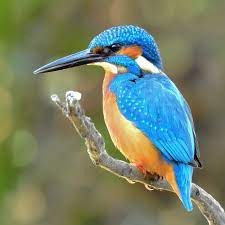
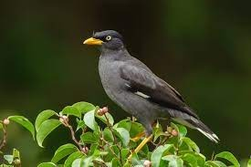
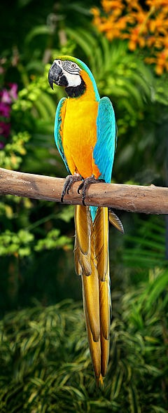

CASE STUDY BETWEEN GOOGLE LENS AND MOBILE NET
GOOGLE LENS
V/S
MOBILE NET
Output from GOOGLE LENS - Eagle
Output from MOBILE NET - Vulture
Result: Google Lens Is More Accurate

Output from GOOGLE LENS - Humming Bird
Output from MOBILE NET - Humming Bird
Result: draw

Output from GOOGLE LENS - Common Kingfisher
Output from MOBILE NET - Bee Eater
Result: Google Lens Is More Accurate

Output from GOOGLE LENS - Javan Myna
Output from MOBILE NET - Crow
Result: Google Lens Is More Accurate

Output from GOOGLE LENS - Macaw
Output from MOBILE NET - Macaw
Result: draw
Conclusion: Google Lens Is More Accurate Than Mobile Net.